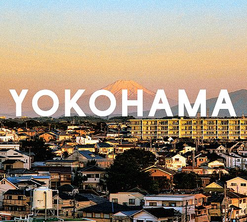

横浜で見つけた「小さな幸せ」

横浜に住んでから、私は日常の中にある「小さな幸せ」に気づくようになりました。
海のそばを歩く朝、坂道に咲く季節の花、静かなカフェの空気…。特別なことではなくても、心に残る景色や瞬間たちは、私の毎日をやさしく包んでくれます。
このページでは、そんな「横浜で好きになった風景」や「感じたこと」を紹介します。
横浜で見つけた、小さくてやさしい毎日の景色

横浜に住んでから、私は日常の中にある「小さな幸せ」に気づくようになりました。
海のそばを歩く朝、坂道に咲く季節の花、静かなカフェの空気…。特別なことではなくても、心に残る景色や瞬間たちは、私の毎日をやさしく包んでくれます。
このページでは、そんな「横浜で好きになった風景」や「感じたこと」を紹介します。